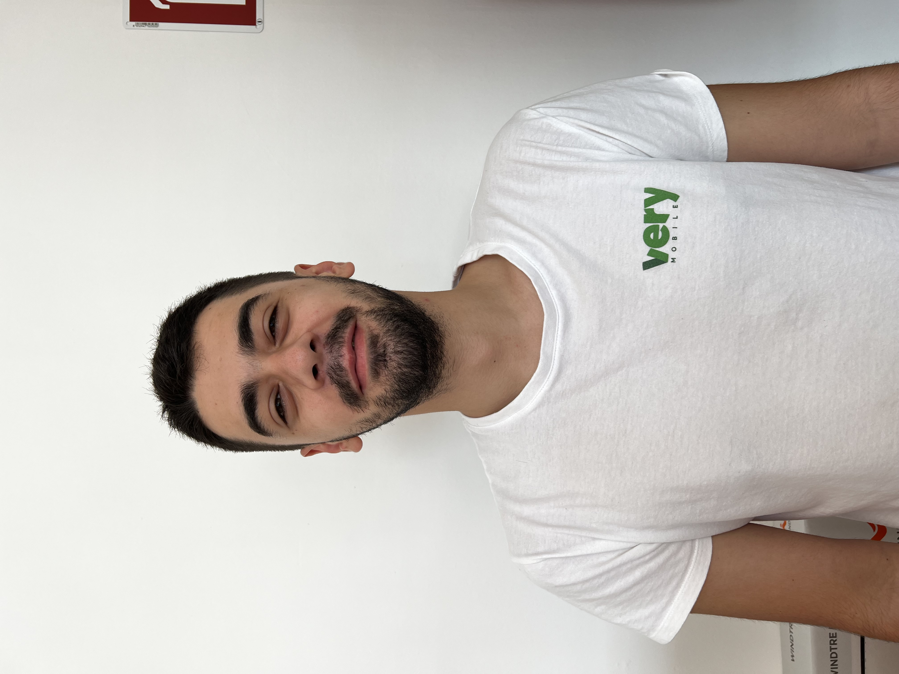

Foto scattata quando lavoravo in un negozio telefonico
Mi chiamo Luca Pintimalli,sono nato a Torino nel 1999. Attualmente vivo a Ciriè(TO).Vivo con il mio cane, due gatti affettuosi e due adorabili tartarughe ♥ .In questo momento sono disoccupato ,frequento un corso presso Epicode
Passo il mio tempo a studiare e a occuparmi dei vari animali che mi girano per la casa , sono abbonato allo stadio e vado a vedere le partite della Juventus dal vivo quando gioca in casa. Mi piace anche camminare, giocare alla play e vedere i miei amic
Dopo aver conseguito il Diploma, ho iniziato subito a lavorare in diversi settori, ma nessuno di questi lavori mi ha mai appassionato veramente. Ultimamente, sentendomi insoddisfatto, ho cominciato a pensare di prendermi un anno sabbatico per dedicarmi a me stesso e imparare una nuova professione. Così ho deciso di iscrivermi al corso di Epicode.
Le mie competenze
Gestione Clienti
Manutenzione e assistenza su dispositivi mobili
Vendita Prodotti
Competenze da acquisire
Conoscenza approfondita di linguaggi per la strutturazione e la presentazione di contenuti web come HTML, CSS e JavaScript.
Conoscenza di linguaggi di programmazione back-end.
Conoscenza dei concetti di AI e ML per lo sviluppo di sistemi intelligenti e automatizzati.